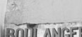

Willkommen auf domain.ch
Blindtexte werden zunehmend populärer! Besonders naive Leute lesen diese sinnlosen Aneinanderreihungen von Worten immer sehr gerne und mit grossem Interesse. Aber wieso ist das eigentlich so? Geschieht das nur bei langweiligen Deisgns oder auch sonst? Naja, kann uns eigentlich egal sein, denn nun wiederholt sich der Text eh nur noch, also wenn Sie immer noch dabei sein sollten, ist nun endgütlig Schluss:Blindtexte werden zunehmend populärer! Besonders naive Leute lesen diese sinnlosen Aneinanderreihungen von Worten immer sehr gerne
Logos
Logos sind langwei-
lig, wenn sie ohne Emotionen zubereit-
et wurden, was wir natürlich tun...
Webdesign
Logos sind langwei-
lig, wenn sie ohne Emotionen zubereit-
et wurden, was wir natürlich tun...
Printdesign
Logos sind langwei-
lig, wenn sie ohne Emotionen zubereit-
et wurden, was wir natürlich tun...